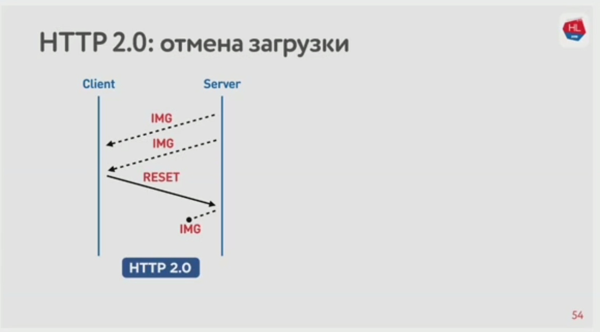
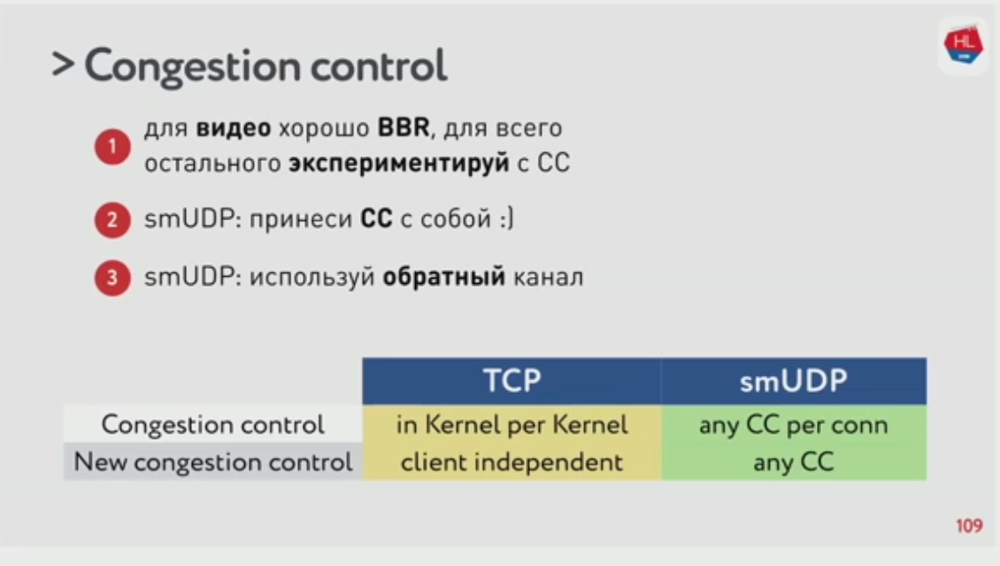

UDP против TCP, или Будущее сетевого стека
Что мы знаем об IP-сетях
- Мы отправляем пакеты
- черный ящик их пересылает клиенту
- клиент собирает пакеты
Внутри черного ящика есть уровни:

Давайте сравним TCP и UDP. В них сильно отличается структура пакетов:

Главное: TCP задуман как протокол надёжной доставки данных, а UDP — нет. Может ли оказаться, что UDP лучше решит задачу надёжной доставки?
Цели на сегодня
- Как работает сеть
- Зачем сравнивать TCP или что с ним не так
- С чем и на чём сравнивать TCP
- Как это сделал Google
- Какое будущее сетевых протоколов нас ждёт
Теорию и математику обсуждать не будем. Будем разбирать практические кейсы.
Мобильный мир победил
Важно: сначала появились проводные сети, но беспроводные, которые появились позже, сейчас явно победили. Большая доля трафика — мобильный трафик или хотя бы вайфай.
В беспроводных сетях бывают потери пакетов, смена порядка и jitter. Протокол TCP/IP скрывает от нас эти ошибки.

Вот средние параметры соединения у пользователей мобильного интернета.

Итоги:
- > 80% используют беспроводной интернет
- парметры беспроводных сетей постоянно меняются
- в них высокие показатели packet loss, jitter, reordering
- фиксированный асимметричный канал, возможна смена IP-адреса
Статистика показывает, что потребление мобильного видео зависит от качества канала.
Получается, что TCP не очень эффективен для доставки контента.
Пробовали распараллелить загрузку данных с клиента — использовать несколько одновременных соединений. Получается быстрее.
Ошибки уменьшают утилизацию канала, а распараллеливание при ошибках помогает увеличить утилизацию:

Почему нам не подходит TCP
Итого: зачем же нужно сравнивать ТCP?
- беспроводные сети победили и они нестабильны
- потребление контента зависит от скорости интернета (а мы хотим, чтобы пользователи потребляли больше)
- TCP плохо утилизирует канл на нестабильных сетях. Распараллеливание помогает, но не всё можно распараллелить.
Что с этим делать?
- Можно сделать свой протокол рядом с TCP и UDP. И годами ждать, пока его поддержат все участники интернетов.
- Или сделать свой надёжный протокол поверх UDP в User Space.
получаем smUDP: self-made UDP
У разного контента разные профили потребления сети.

HTTP 1.1 и HTTP/2
Конечно же мы должны сравнить протоколы на HTTP 1.1 и HTTP/2.
HTTP 1.1 предлагает использовать по одному соединению на каждую единицу контента. HTTP/2 — одно мультиплексированное соединение.

При этом в HTTP 1.1 клиент (браузер) обычно использует пул соединений. Проблема в том, что между соединениями есть конкуренция. Картинка, которую пользователь уже пролистал и больше не увидит, конкурирует с другой, которая впереди в ленте. И в HTTP 1.1 сложно отменить загрузку — только закрыть сокет и отменить соединение.

HTTP/2 лучше:
- бинарный, со сжатием заголовков;
- есть мультиплексирование,
- приоритизация,
- отмена загрузки,
- и server push.
Приоритизация позволяет получить приоритетный контент раньше:

Server push: сервер может отдать контент, который точно понадобится в будущем.

Отмена загрузки: если клиенту уже не понадобится контент, клиент может отказаться от загрузки.

Сравниваем TCP и smUDP
Итого, на чём нам сравнивать TCP и smUDP
- Профили сети: WiFi, 3G, LTE
- Профили потребления:
- стриминг
- мультиплексирвоание и приоритизация с отменой загрузки (в HTTP/2)
Простая сеть: bandwidth + RTT
В TCP важен размер буфера отправки. Сервер держит контент в буфере, пока не получит подтверждение (acknowledgement), что контент получен. Но чем больше RTT, тем дольше ждать подтверждения.

Если мы увеличим размер буфера, то фактическая ширина канала вырастет.

Но всё не так просто. Важны on-the-fly packets. Это те, которые мы отправили, но ещё не получили подтверждения. Если буфер слишком мал, то мы недоиспользуем сеть, как мы уже поняли. Но если буфер слишком большой, то мы приходим к распуханию буфера (bufferbloat). Буфер заполнен кучей on-the-fly пакетов, а скорость снова маленькая.
Казалось бы, давайте временно увеличивать буфер, когда нам нужно отправить много пакетов. Но буфер нельзя просто так уменьшить.
А если у нас свой протокол, то мы можем:
- уменьшать буфер
- раньше отправлять более важные пакеты
- если клиент отправил cancellation, сбросить пакеты из буфера

Как это делается? Присваиваем отправляемым пакетам сквозной sequence number.
Итак:
- размер буфера имеет значение
- mutable buffer — это хорошо
Сложная сеть: bandwidth + RTT + packet loss
Стандартный алгоритм: если за установленное время сервер не получил acknowledgement, он повторно посылает пакет. Давайте снова будем терять пакеты.
Разберёмся, как работает Congestion Control.
Для начала, TCP window: количество одновременно отправляемых пакетов. Отправитель начинает с 10 и разгоняется, увеличивая количество. Если в какой-то момент пакеты теряются, он уменьшает окно и снова разгоняется.

Congestion Control придуман для предотвращения перегрузки сети. Вот где-то в сети есть роутер, который больше всего нагружен. Он умный: не ждёт когда совсем перегрузится, а начинает дропать пакеты чуть раньше, чтобы отправитель уменьшил окно.

Вся эта схема придумана давным-давно для проводных сетей. Там потеря пакетов могла означать только одно: где-то перегружен узел, надо снизить скорость. Но в беспроводных сетях не так! Там пакеты теряются просто потому что соединение беспроводное.
Получается, есть два типа потерь:
- congestion loss, от переполнения
- random loss, от плохого беспроводного соединения
Каким бывает Congestion Control
Congestion Control эволюционирует. Нам особенно интересны реализации Cubic и BBR.

Если скорсть растёт, BBR схлопывает окно заранее, Cubic дожидается потери пакетов и тогда схлопывает окно.

Работают они так:
- BBR прощупывает размер окна и поддерживает его. За счёт этого получается минимальная задержка. BBR различает congestion loss и random loss.
- Cubic работает агрессивно: переполняет буфер до потери пакетов, сбрасывает скорость, потом снова постепенно повышает.
Совсем сложная сеть: bandwidth + RTT + packet loss + jitter
Казалось бы, BBR решит все наши проблемы. Но есть ещё и jitter! Он влияет в том числе на получение acknowledgements от получателя. То есть в некоторых случаях пакет доставляется успешно, но отправитель не успевает получить подтверждение и шлёт пакет снова. BBR уязвим к высокому jitter.
Было бы здорово, если бы сервер мог знать jitter клиента. Но в стандартном пакете acknowledgement (ACK Frame) в TCP этой информации нет. Зато мы можем добавить её в smUDP ACK Frame.

Мобильные сети асимметричны. Обычно 70% на приём и 30% на отправку. Стоит разделить jitter на приём и отправку.
Какой congestion control выбрать на сервере?

А на клиенте всегда Cubic и мы не можем на это повлиять.
Выводы такие:
